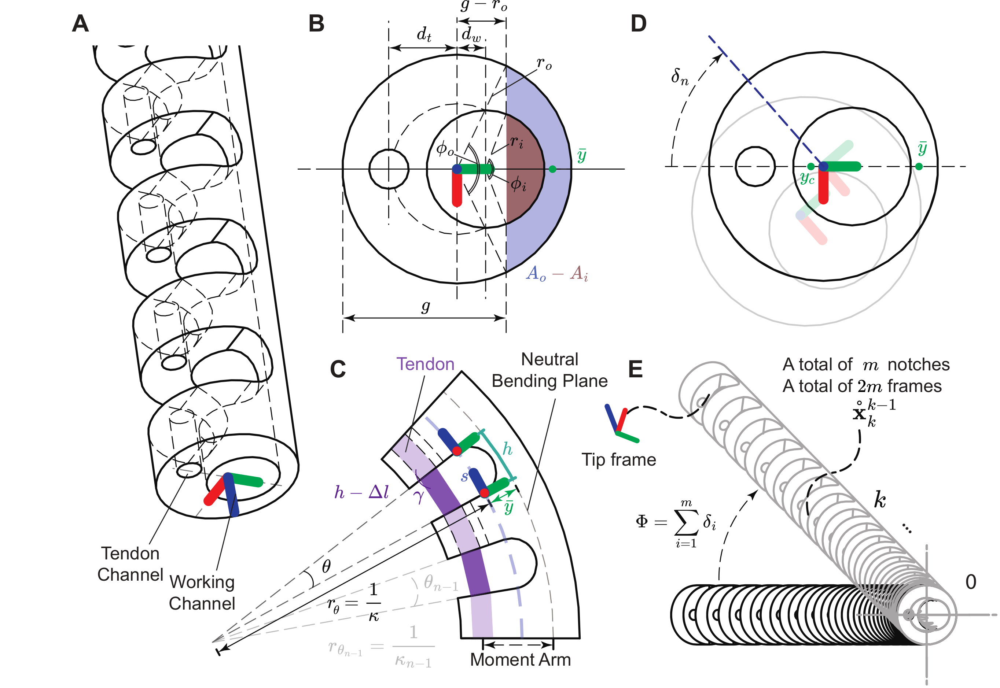
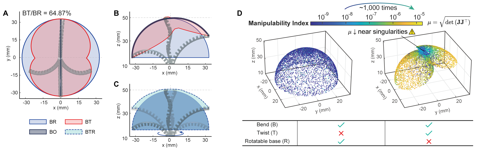

A major limitation of tendon-driven continuum robots lies in their reliance on multiple tendons for achieving complex 3D motion, hindering miniaturization and manipulability.
Tendon-driven continuum robots (TDCRs) with spatial manipulability face fundamental challenges in miniaturization, stemming from the space required to accommodate multiple actuation tendons.
Conventional multi-tendon designs create an inherent trade-off between miniaturization, 3D manipulability, and force output.
The key idea — Miniature TDCRs achieve omnidirectional motion by pushing, pulling, and twisting one eccentric tendon, enabling dexterous teleoperation and tortuous-path navigation — and pointing to next-generation surgical actuators.
A major limitation of tendon-driven continuum robots lies in their reliance on multiple tendons for achieving complex 3D motion, hindering miniaturization and manipulability.
This work introduces a bio-inspired, notched-tube continuum robot with a novel push-pull-twist (PPT) tendon joint, enabling omnidirectional bending, axial twisting, and near-helical motion using only a single tendon. This design significantly reduces system complexity while preserving mechano-conductivity and enhancing distal tip manipulability, enabling highly compact robots for constrained environments.
All robot motions should be predictable — and ours is no exception.
Building on the conventional push–pull mechanism, we introduce a rotational degree of freedom at the proximal anchoring point to enable twist motion.
Due to the eccentric alignment relative to the robot’s cross-sectional centroid, along with the compliant 3D-printed (PolyJet) elastic continuum body, the induced twisting torque can be effectively transmitted to the distal end. This mechanism generates substantial out-of-plane motion, offering spatial manipulability.

Small Enough: The resulting robot features an outer diameter of 2.0–3.5 mm and a circumferential hollow ratio exceeding 57%, nearly doubling spatial utilization efficiency over multi-tendon designs.
Dexterous: Compared to conventional pull-rotatable base mechanisms, the Yoshikawa manipulability index \( \mu = \sqrt{\det(J J^T)} \) improves by over 1,000-fold.

Our design redefines actuation paradigms for tendon-driven continuum robots. The miniaturization and improved dexterity inform the development of next-generation surgical manipulators.
@article{lai2026single,
title = {Single Twistable Tendon-Driven Continuum Robots},
author = {Lai, Jiewen and Liu, Yanjun and Ren, Tian-Ao and Ma, Yan and Zhang, Tao and Teoh, Jeremy Yuen-Chun and Cutkosky, Mark R. and Ren, Hongliang},
journal = {Nature Communications},
year = {2026}
}If you have any questions, feel free to contact Jiewen and Yanjun.
While this work focuses on cylindrical continuum robots, many other structures—such as cone-shaped cable-driven or pneumatic robots—could benefit from the proposed twistable tendon mechanism. These systems may leverage twist-enabled actuation to achieve richer motion patterns without requiring multiple segments.
The relative stiffness between the continuum body and the tendon plays a critical role in determining the robot’s morphology and kinematics. Although our model accounts for stiffness variations, a systematic exploration of material combinations remains an important direction for improving performance and adaptability.
The current system exhibits hysteresis due to tendon friction and soft body deformation. Potential solutions include using more elastic materials or incorporating hysteresis compensation into the model, enabling improved control accuracy and broader material design choices.